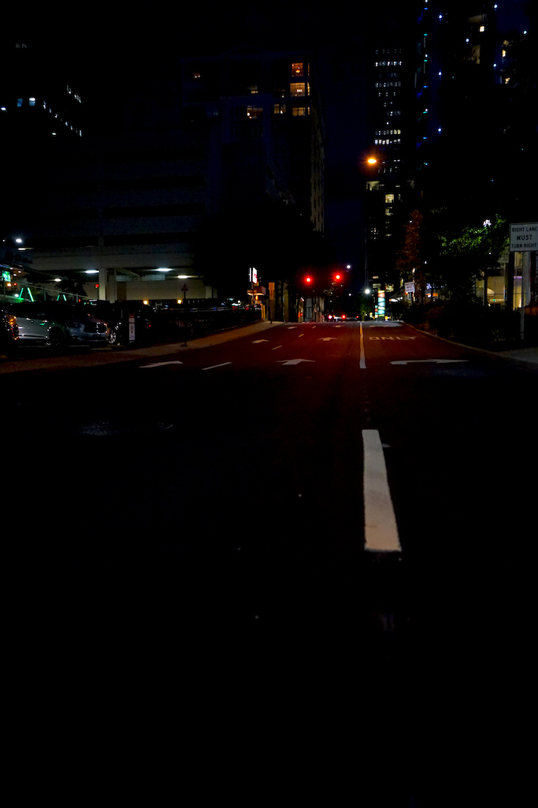
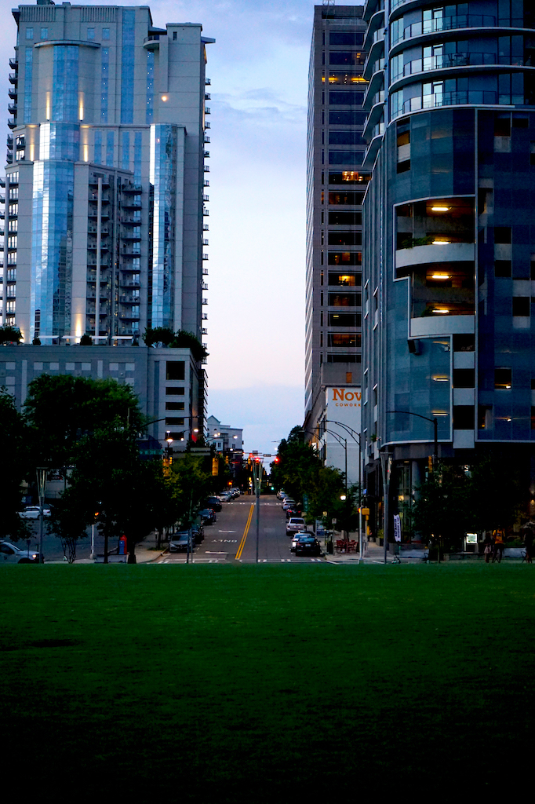
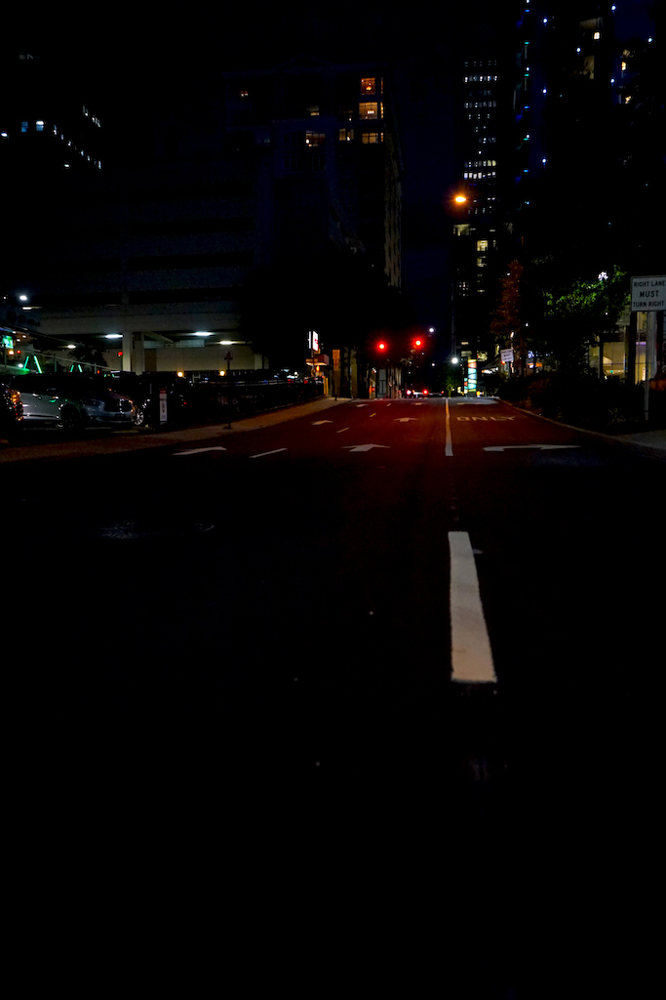
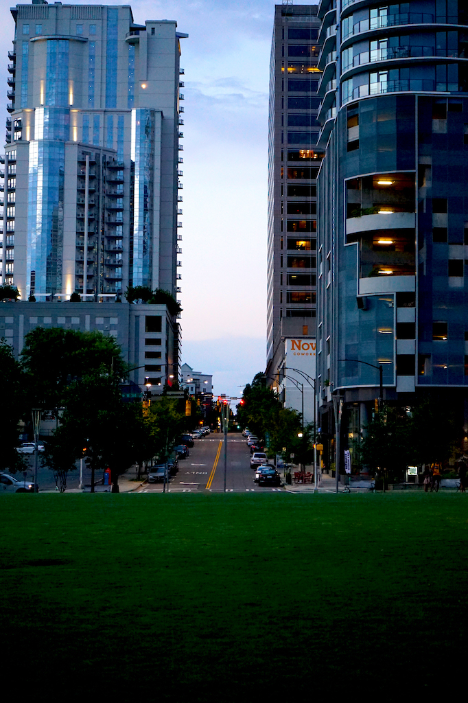
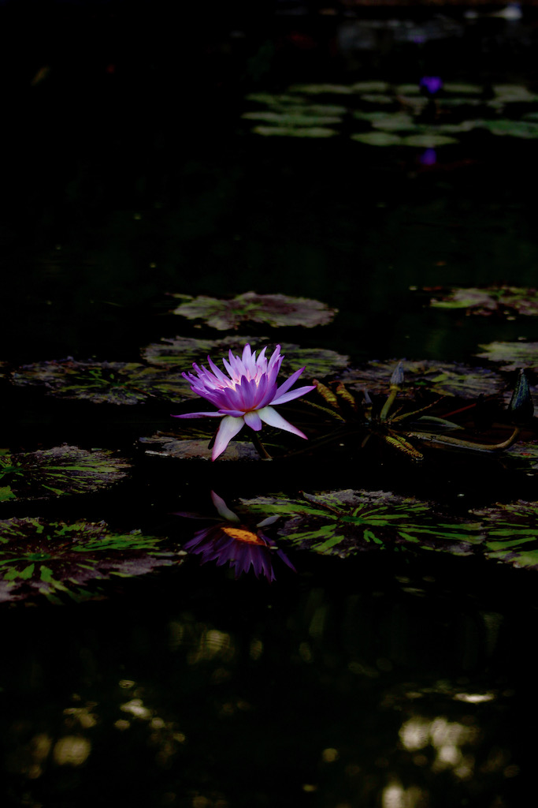
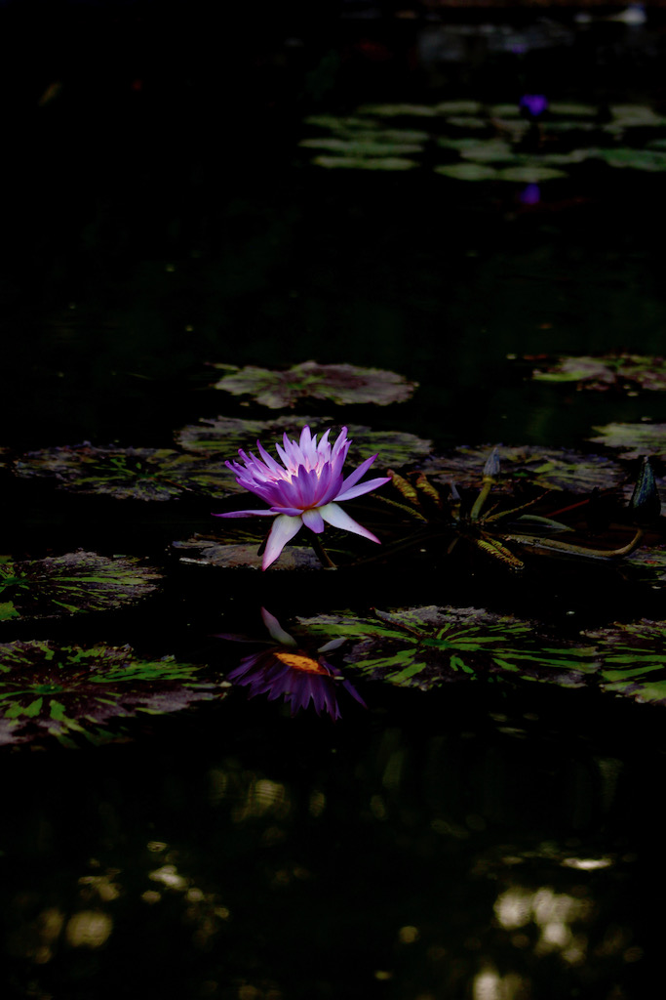

I'm a
- Creative
- Photogragher
- Videographer
My name is Brianna Lewis and I love art. The way I express myself is through art. Whether that is through tattoos, photography, or videography. I found my love at Winston-Salem State University. Thanks to my amazing professors in the Mass Communications department. I had to get out of my comfort zone and I met amazing people through photography and videography. You can connect to people through different types of art and mine so happen to be photography and videography.
My favorite type of photography is documentary and street photography. Also my favorite type of videography is documnetary. I love to be the voice for the voiceless. If I can make an impact on one person through my art then I have done my job right.
 



 


I actually got started by my classmate at Winston-Salem State University. I was a senior and just needed an extra credit and my classmate told me to take this photography class. Unfortutnately it was hard to get to in but because of her I was able to get into this class. The professor was a huge photographer in New York and her teaching style was to go out in the field and take images instead of being in the classroom all day. We would have to talk to people on campus and ask them if we could take their pictures, which was way outside of my comfort zone.

She would even take us on fieldtrips, which was rare for a professor to use her own resources to take us off campus. I started to love photgraphy and my professor encouraged me to get out of my comfort zone. I went to Los Angeles and took a couple of pictures and would send the images to my professor to get her feedback. Which helped a lot. She would tell me which lenses would be the best for the type of photography I was doing. Even after the class, we would remain in contact and she would give me pointers all of the time.


I started honing my craft and getting outside my comfort zone. I started taking picutres all over campus. At every event I was there with my camera. I even began to take graduation pictures for students. I was known as the person that always had her camera around. I could tell from the first images that I took compared to a few months later, I was getting so much better. I had a style of photography I loved, which is documentary/street and landscape photography.